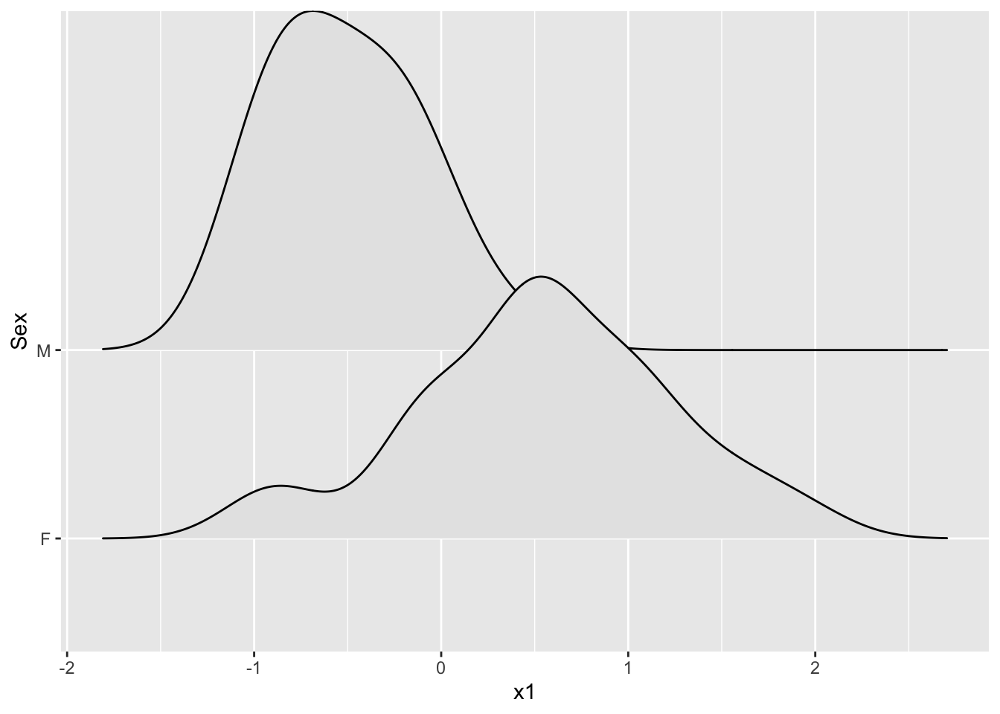

I want to get a handle on what were working with before diving deep on a few variables - so let’s generate some basic descriptive statistics going and some ugly plots to get a sense of the shape and trends of the dataset.
Okay, so we’re looking at a full table using the describe function from the psych package in R. Interestingly, the default describe function does not include quartiles so we can also call summary from base R to get a large picture of the data.
summary(mtcars)
mpg cyl disp hp
Min. :10.40 Min. :4.000 Min. : 71.1 Min. : 52.0
1st Qu.:15.43 1st Qu.:4.000 1st Qu.:120.8 1st Qu.: 96.5
Median :19.20 Median :6.000 Median :196.3 Median :123.0
Mean :20.09 Mean :6.188 Mean :230.7 Mean :146.7
3rd Qu.:22.80 3rd Qu.:8.000 3rd Qu.:326.0 3rd Qu.:180.0
Max. :33.90 Max. :8.000 Max. :472.0 Max. :335.0
drat wt qsec vs
Min. :2.760 Min. :1.513 Min. :14.50 Min. :0.0000
1st Qu.:3.080 1st Qu.:2.581 1st Qu.:16.89 1st Qu.:0.0000
Median :3.695 Median :3.325 Median :17.71 Median :0.0000
Mean :3.597 Mean :3.217 Mean :17.85 Mean :0.4375
3rd Qu.:3.920 3rd Qu.:3.610 3rd Qu.:18.90 3rd Qu.:1.0000
Max. :4.930 Max. :5.424 Max. :22.90 Max. :1.0000
am gear carb
Min. :0.0000 Min. :3.000 Min. :1.000
1st Qu.:0.0000 1st Qu.:3.000 1st Qu.:2.000
Median :0.0000 Median :4.000 Median :2.000
Mean :0.4062 Mean :3.688 Mean :2.812
3rd Qu.:1.0000 3rd Qu.:4.000 3rd Qu.:4.000
Max. :1.0000 Max. :5.000 Max. :8.000
Great, now with a more complete picture, we can start to sus out some interesting aspects of our data. I’m particularly interested in MPG, or miles per gallon, there’s a large dispersion between our min and max within MPG with a median slightly less than the mean, which tells us that this variable might not be normally distributed.
Let’s verify and start to understand the shape of MPG with a quick and dirty histogram:
hist(mtcars$mpg)

Great, as you can see this confirms
Any variable: let’s look at the the mean, and in any normally distributed sample, the arithmetic mean is generally the center or middle point of the data, hence why it is a “measure of central” tendency. You can also use the median value, but generally the median is a more reliable assumption of central tendency when the data are skewed in some way, a classic stat example being a sample of salaries of folks eating in a diner, if a billionaire walked in, the mean of that data might move from 46k to 125m, but the median value may be 47.5k, a truer measure of the middle point of our sample of diner patrons.
Descriptions like “mode” generally refer to the “most frequent value” and work well with nominal data, i.e. data that is an un-ordered description like “Human” or “Dragon”. Nominal data are also categorical, which just means the data can be divided into discrete groups. I like this illustration that outlines categorical data, it probably does a better job than I just did:
Anyway, back to the variable at hand:
Let’s dig a bit deeper by calling describe once again just on MPG and filter out the noise of all of this information:
psych::describe(mtcars$mpg)
vars n mean sd median trimmed mad min max range skew kurtosis se
X1 1 32 20.09 6.03 19.2 19.7 5.41 10.4 33.9 23.5 0.61 -0.37 1.07
Let’s also generate a more advanced look by plotting our measures of central tendency and dispersion against the raw data from MPG. I do like histograms, but this modified density plot gives you a better sense of the shape of the distribution.
#plot with mean, and SD's
Describe SD and it’s formulaic relationship with variance. Relate the SD to the mean and describe why this is important: it allows us to infer and estimate values around the mean. We know that around 2/3 of the sample is within 1 SD, and 95% is within 2.
SD and it’s relationship to variance is interesting because you can visually see that as variance increases, the shape of our distribution gets wider, showing a greater so called “distance” between the mean and each SD segment. The inverse is true, the lower the variance, the taller or narrower the normal curve becomes.
We can use this information to make inferences about the total population of cars with a 95% confidence level that if we repeated this data gathering (or simulated it) we can say that most cars would be between 8 and 32 MPG, and the standard error is X. blah
We can visualize this a different way by using a z transformation to center the data around a mean of 0, that way you’ll be able to literally see the areas of SD under the curve.
I think we can go further and try to visually establish a relationship b/w two variables. We won’t go into an actual statistical evaluation of the strength of the relationship using something like P values, but we utilize a scatterplot with a line of best fit that may illustrate a positive linear relationship between var 1 and var 2.
#plot vars#add ln #annotate and visualize in ggplot